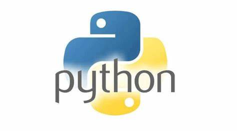
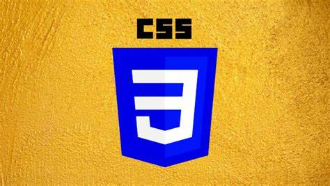

JavaScript is a programming language commonly used in web development. It was originally developed by
Netscape as a means to add dynamic and interactive elements to websites. While JavaScript is influenced
by Java, the syntax is more similar to C and is based on ECMAScript, a scripting language developed by
Sun Microsystems.
JavaScript is a client-side scripting language, which means the source code is processed by the client's
web browser rather than on the web server. This means JavaScript functions can run after a webpage has
loaded without communicating with the server. For example, a JavaScript function may check a web form
before it is submitted to make sure all the required fields have been filled out. The JavaScript code
can produce an error message before any information is actually transmitted to the server.
Like server-side scripting languages, such as PHP and ASP, JavaScript code can be inserted anywhere
within the HTML of a webpage. However, only the output of server-side code is displayed in the HTML,
while JavaScript code remains fully visible in the source of the webpage. It can also be referenced in a
separate .JS file, which may also be viewed in a browser.

PYTHON
Python is a widely-used general-purpose, high-level programming language. It was initially designed by
Guido
van Rossum in 1991 and developed by Python Software Foundation. It was mainly developed for emphasis on
code
readability, and its syntax allows programmers to express concepts in fewer lines of code.
In the late 1980s, history was about to be written. It was that time when working on Python started.
Soon
after that, Guido Van Rossum began doing its application-based work in December of 1989 at Centrum
Wiskunde
& Informatica (CWI) which is situated in the Netherlands. It was started firstly as a hobby project
because
he was looking for an interesting project to keep him occupied during Christmas. The programming
language in
which Python is said to have succeeded is ABC Programming Language, which had interfacing with the
Amoeba
Operating System and had the feature of exception handling. He had already helped to create ABC earlier
in
his career and he had seen some issues with ABC but liked most of the features. After that what he did
was
really very clever. He had taken the syntax of ABC, and some of its good features. It came with a lot of
complaints too, so he fixed those issues completely and had created a good scripting language that had
removed all the flaws. The inspiration for the name came from BBC's TV Show – 'Monty Python’s Flying
Circus’, as he was a big fan of the TV show and also he wanted a short, unique and slightly mysterious
name
for his invention and hence he named it Python! He was the “Benevolent dictator for life” (BDFL) until
he
stepped down from the position as the leader on 12th July 2018. For quite some time he used to work for
Google, but currently, he is working at Dropbox.
The language was finally released in 1991. When it was released, it used a lot fewer codes to express
the
concepts, when we compare it with Java, C++ & C. Its design philosophy was quite good too. Its main
objective is to provide code readability and advanced developer productivity. When it was released it
had
more than enough capability to provide classes with inheritance, several core data types exception
handling
and functions.

CSS
CSS is another thing you may learn just after understanding HTML. CSS stands for the cascading style
sheets,
which Hakon Wium Lie created in 1994. Hakon Wium Lie is considered the father of CSS as he created this
amazing thing. And he used to work with the father of HTML, Mr. Tim Berners-Lee, when he was working in
CERN.
CSS was offered as the web styling language to make it appealing. And it was the solution that most of
the
users of HTML were looking at that time. When it launched, the users could use HTML 4.01 and CSS
together to
make their web pages more attractive.
Hence, if you want to know about the history of CSS from its origin to now. Then read this essential
article
because it has several things that will help you understand CSS. You will also understand how CSS won
over
other styling languages of that time.